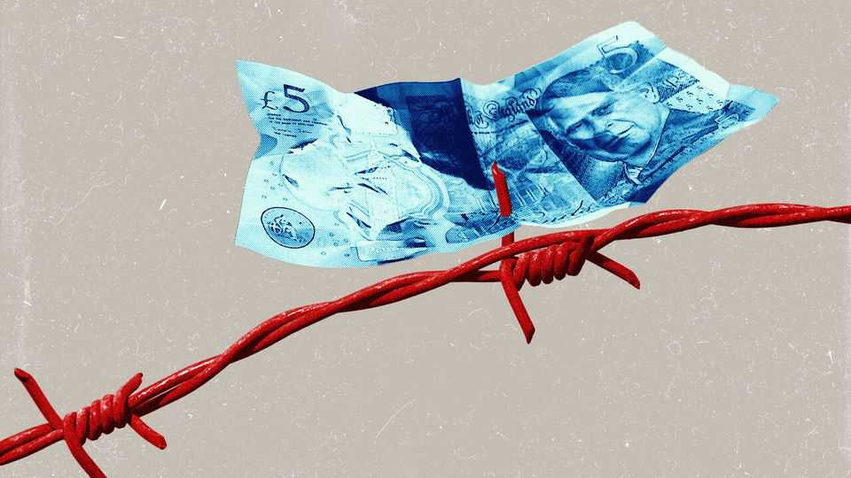
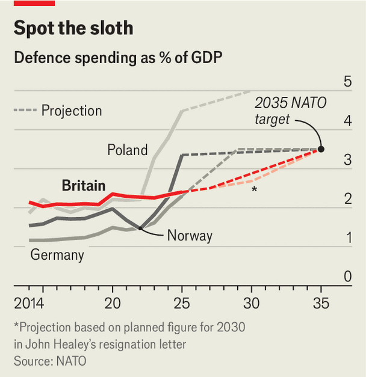

Britain is slipping down the defence league table
The government cannot avoid hard choices for ever
June 18th 2026

British officials, eager to rebuild bridges with Europe, see defence as a ticket to a closer relationship with the bloc in other spheres. After the resignation last week of John Healey, a widely respected defence secretary, over the failure of the government to come up with the money for the armed forces to match its rhetoric, that assumption is fraying.
Mr Healey had been locked in a battle with the Treasury over a spending plan to fund the government’s strategic defence review (SDR). In his brutal resignation letter to Sir Keir Starmer he told the prime minister: “You have been unable, and the Treasury has been unwilling, to commit the resources that the nation needs to defend the country at this time of rising threats.” The SDR, published a year ago, called for moving at speed to be ready for war. In February Sir Keir told the Munich Security Conference: “We must build our hard power, because that is the currency of the age…As Europe, we must stand on our own two feet. And that means being bold.”
But British boldness has been conspicuously lacking. Wrangling over how much money the armed forces would get saw the defence investment plan (DIP) delayed time and again. Service chiefs warned of a £28bn ($38bn) shortfall in the equipment budget over the next four years. The need to get the DIP out before the NATO summit in Ankara on July 7th brought matters to a head. Mr Healey, by his own account, was presented with an allocation that fell “well short” of what was required. The headline figure of £13.5bn was actually nearer £10bn once some Treasury sleight of hand is taken into account.

At a time when many countries in Europe, including Germany and Poland, are rapidly raising their defence budgets, Britain will be spending only 2.68% of GDP on defence by 2030, an increase of just 0.08 percentage points over next year’s figure (see chart). The government’s pledge to get to 3% in the next parliament (provided “economic and fiscal conditions allow”) and to meet the NATO target of 3.5% by 2035 scarcely looks credible. General Sir Nick Carter, a former chief of the defence staff, says: “Even as our NATO allies make hard choices, we slip ever further down the NATO league table—a table we once led.”
Part of the problem is that the one programme regarded as untouchable, known as the defence nuclear enterprise (DNE), is expected to absorb about half of the equipment budget over the next decade. As well as the requirement for four “Dreadnought” ballistic-missile submarines and a new nuclear warhead, the DNE now encompasses the AUKUS pact with America and Australia through which Britain will acquire 12 nuclear attack submarines.
Unless the new defence secretary, Dan Jarvis, a former paratrooper, can squeeze more money from the Treasury, programmes to re-equip the army with state-of-the-art armoured vehicles and to replace the navy’s ageing surface fleet with new destroyers and frigates in the 2030s will face cuts and delays. The RAF may have to give up on getting 12 nuclear-capable F-35A fighter jets. Even the high-profile Global Combat Air Programme partnership with Japan and Italy to build a sixth-generation fighter may be (in the jargon) “pushed to the right”.
Sir Lawrence Freedman, a leading British strategist, believes a fundamental rethink is needed. This should consider what capabilities are urgently required and what Britain is in a unique position to provide for the defence of Europe. He argues that the immediate priorities should be getting stocks of munitions up to levels able to sustain high-intensity warfare, and investing in drone-making capacity and technology. Working with Ukrainian firms could deliver precision deep-strike weapons quickly and at low cost. Speeding up maintenance and refits is also urgent. Scandalously, about half the navy’s major surface ships and the entire attack-submarine fleet are docked for repairs and upgrades.
As for contributions to NATO, Sir Lawrence stresses Britain’s nuclear deterrent and protecting North Atlantic sea lanes and undersea infrastructure, such as cables and pipelines, from Russian subs and sabotage. “The army”, he says, “has a role to play but is unlikely to be leading mechanised breakthroughs in a European war.”
Britain is still keen to show it has lost none of its military derring-do. This week Royal Marines fast-roped from helicopters to seize a Russian “shadow fleet” tanker in the Channel, while Sir Keir promised that Britain will “play our full part” in opening up the Strait of Hormuz. But the DIP, when it finally lands, will do little to convince Britain’s European allies that it will make the hard choices needed to live up to its aspirations as a security partner. ■
For more expert analysis of the biggest stories in Britain, sign up to Blighty, our weekly subscriber-only newsletter.